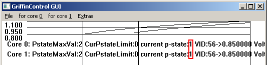
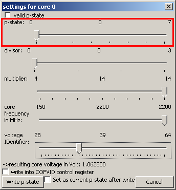
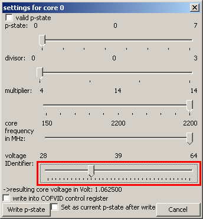

If the current performance state is not "0" like here:

and you start a high load and it doesn't change to performance state "0"
then it's pretty sure that the OS's dynamic frequency scaling is disabled.



else the new voltage is not applied
- e.g.
use the "start high load thread" menu item:

- or calculate a faculty with Windows' calculator
- or run
a CPU stress application like Prime95 or ORTHOS
- then
you probably have to start as many threads as there are CPU cores
because else you can not assign a high load thread to a specific CPU
core with Prime95
(I think its because if there is more than 1 CPU core then Windows' process scheduler switches the thread among the cores to achieve a similar load for each core) - or
you start one thread and use Windows' task manager to assign the stress
program to 1 CPU core:

then you should increase the voltage for the performance state the calculation error occured in. So you do not need to reboot.
- then
you probably have to start as many threads as there are CPU cores
because else you can not assign a high load thread to a specific CPU
core with Prime95
hit the tabular key until the voltage ID slider has the input focus

Now press the right arrow key once shortly so that the voltage ID is increased by 1.

- If
the voltage does not seem to be too low, e.g.
- not freezed
- Prime95 has no calculation errors
- If there is a sign that the voltage is too low, e.g.:
- device (e.g laptop) is freezed:
- restart the device (e.g. laptop)
- remember the VID "current_VID" you set or start Windows in safe mode and watch the latest log data for the last set voltage
- Prime95 has calculation errors
- device (e.g laptop) is freezed:
- use the VID "low_stable_voltage" = "current_VID - 2" or "current_VID - 3" for the configuration (file) for the performance state / frequency that was tested.
- if
you sometimes switch from altenate current to direct current (battery
mode) what is pretty common with notebooks:
test if the "low_stable_voltage" is really stable by a harder test:
If the CPU is inside a device that switches from AC to DC in case of no more current from the power adapter (like usual notebooks do): - insert a charged battery into the notebook
- put it into Alternate Current mode (so it gets its current from power adapter)
- remove from Alternate Current mode (e.g unplug the power cord) so it switches to Direct Current (=battery ) mode
- if
the device is not freezed:
go to step "put it into Alternate Current mode" and you want to ensure that this was not just a piece of luck - if the device is freezed:
"low_stable_voltage" = "low_stable_voltage -1 " or "low_stable_voltage -2 "
go to step "put it into Alternate Current mode" - now you can specify "low_stable_voltage" in the configuration file for the p-state you tested for the service and/ or GUI